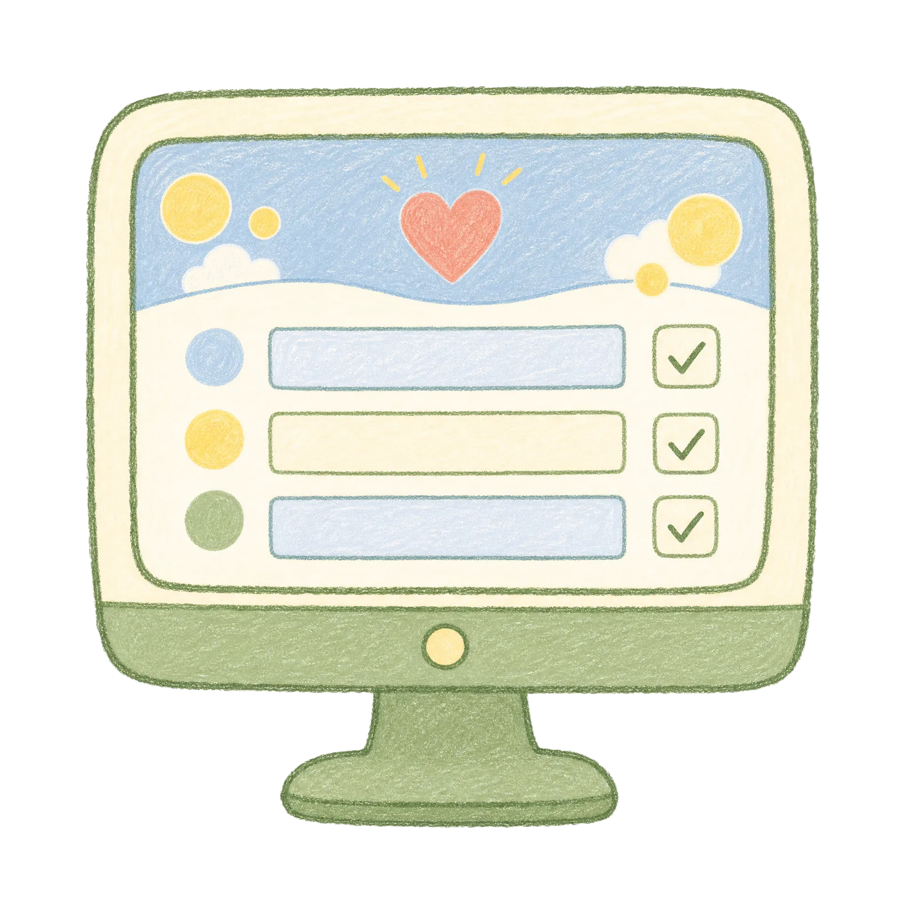
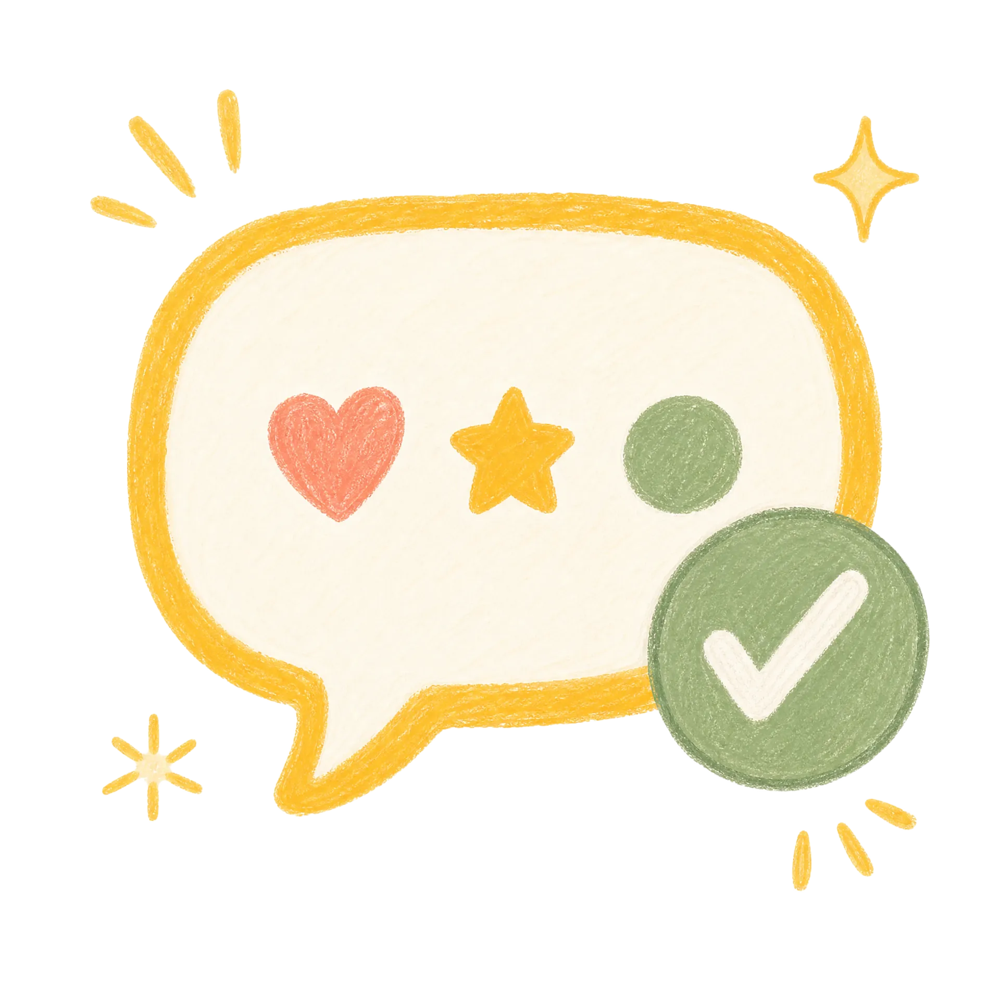

짧은 검진 귀가나 장보기가 필요할 때! 부담 없는 '1시간 라이트 케어'를 만나보세요
1시간 요금 보기 →
부모님의 병원길이 외롭거나 불안하지 않도록,
전문 매니저가 처음부터 끝까지 함께합니다.
간호사·요양보호사 등 전문 자격을 보유한 매니저만 철저한 검증을 거쳐 배정됩니다.
진료 과정과 의사 전달 사항을 카톡으로 실시간 공유해 언제든 안심하고 확인하실 수 있습니다.
접수, 진료, 수납, 약 수령, 귀가까지 전 과정을 매니저가 처음부터 끝까지 밀착 케어합니다.
원하시는 지역을 선택해 상세 커버리지를 확인하세요.
100% 검증 매니저 · 08-18시 실시간 상담 · 인천·경기 전 권역
어르신의 안전한 병원 진료와 편안한 일상을 연결하는
1:1 맞춤형 동행 케어 서비스를 제공합니다.
수면내시경 귀가, 단지 내 산책 등 1시간 이내 단기 돌봄
접수부터 진료 동석, 약 수령 및 안전 귀가까지 원스톱 케어
초과 30분당 12,500원
관공서·은행 업무 대행 또는 병원 진료 후 장보기 원스톱
복합 매칭 60,000원 / 초과 30분당 10,000원~
※ 일반 동행 서비스는 기본 2시간부터 이용 가능하며(1시간 라이트 케어 제외), 매니저 안심케어(배상책임) 혜택이 기본 포함됩니다.
추가 옵션 · 주말/야간 할증 · 교통비 정산 기준은 예상 요금 페이지에서 자세히 확인하실 수 있어요.
마음까지 이어주는 안심 동행, 위드브릿지가 함께합니다.

위드브릿지 웹페이지 또는 카카오톡으로 희망하는 일시와 병원, 필요 서비스를 알려주세요. 바쁜 보호자분도 1분 만에 쉽고 빠르게 접수하실 수 있습니다.
접수 확인 후 전문 케어 자격을 갖춘 맞춤 동행 매니저가 배정됩니다. 매니저의 프로필과 이력을 사전에 확인한 후 안심하고 서비스를 이용하실 수 있습니다.
약속된 시간에 매니저가 어르신 댁으로 방문하여 병원 이동, 접수, 진료 보조, 약 수령까지 전 과정을 든든하게 밀착 케어합니다.

동행 시작부터 귀가까지 전 과정을 카카오톡 알림으로 실시간 공유합니다. 진료 후에는 의사 전달사항이 담긴 '안심 리포트'를 전달해 드립니다.
이제 막 첫걸음을 내딛는 위드브릿지는 어르신과 보호자님의 목소리에 귀 기울이고 있습니다.
따뜻했던 동행의 순간을 들려주세요.
이용자 병원 동행부터 임직원 부모님 케어까지, 기관 규모와 특성에 맞춘 플랜을 함께 설계해 드립니다. 지금 얼리 파트너를 모집하고 있어요.